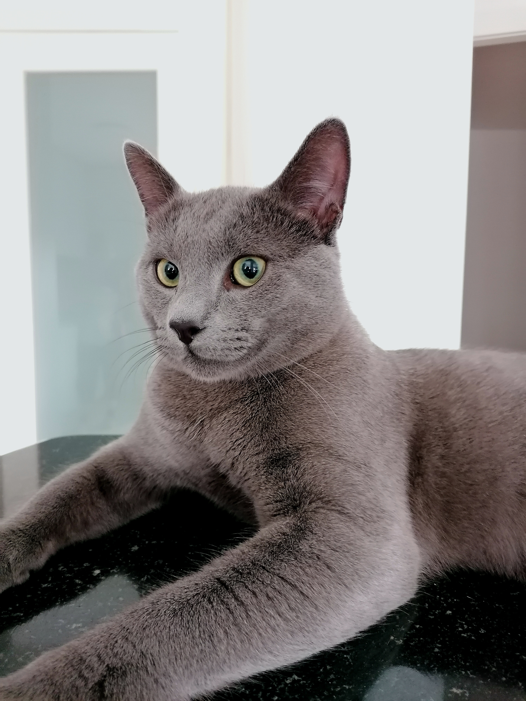

The Russian Blue is an elegant cat breed from Russia with a signature silverish-blue coat, sweet personality, and impressive intelligence [1], [2], [3], [4].
Appearance
The Russian Blue cat breed got its name after its distinctive signature silver coat with a blue shimmer. They are a shorthair cat breed with soft and silky fur, and a double coat to keep them warm as they originate from a cold climate. As kittens, their eyes are sky blue, but as adults, their eyes turn into a beautiful emerald or lime green color. They are very slim and long cats making them extremely elegant and fragile-looking.
Personality
Russian Blues are mostly known for their extremely high intelligence and their lovely friendly nature. Although they are quite shy and reserved around strangers, with family members, they are very affectionate. They are family-oriented cats, connecting with and loving all family members as well as getting along with other pets and children in the family. Still, they can be very independent and will not mind staying home alone as they also enjoy quiet, alone time. Russian Blues are highly intelligent and capable of learning many tasks, such as playing fetch, doing tricks, coming when called, and even opening doors and drawers! Along with being affectionate and intelligent, they have a very playful nature, especially as kittens! They are fond of jumping and climbing to high places where they can observe from afar. Russian Blues are usually medium to high vocal cats. They enjoy communicating with their owners and will also often meow when they need something.
History
Russian Blues are believed to originate in Russia's Archangel Isles
around the port of Arkhangelsk, thus why another name for the Russian
Blue cat is Archangel cat. It is thought that the Russian Blue cats
accompanied sailors to Northern Europe and Great Britain during the
1860s. The first Russian Blue cat (Archangel cat) was shown at London's
Crystal Palace in 1875, and ever since then, these amazing cats have
been highly coveted. Unfortunately, after the Second World War, the
Russian Blue cat breed experienced a population collapse as many
other cat breeds did at that time. Thankfully, Scandinavian and British
breeders worked to bring those numbers back up.
Russian Blue cats have contributed to the creation of other cat breeds
such as the Nebelung, also called the long-haired Russian Blue, the
Havana Brown, and Oriental Shorthairs cat breeds which all carry
Russian Blue DNA.
Russian Blue cats are recognized by cat breed associations all over
the world, including “Savez felinoloških društava Hrvatske” (SFDH),
the Cat Fanciers' Association (CFA), and The International Cat
Association (TICA) [1], [2], [3], [4].